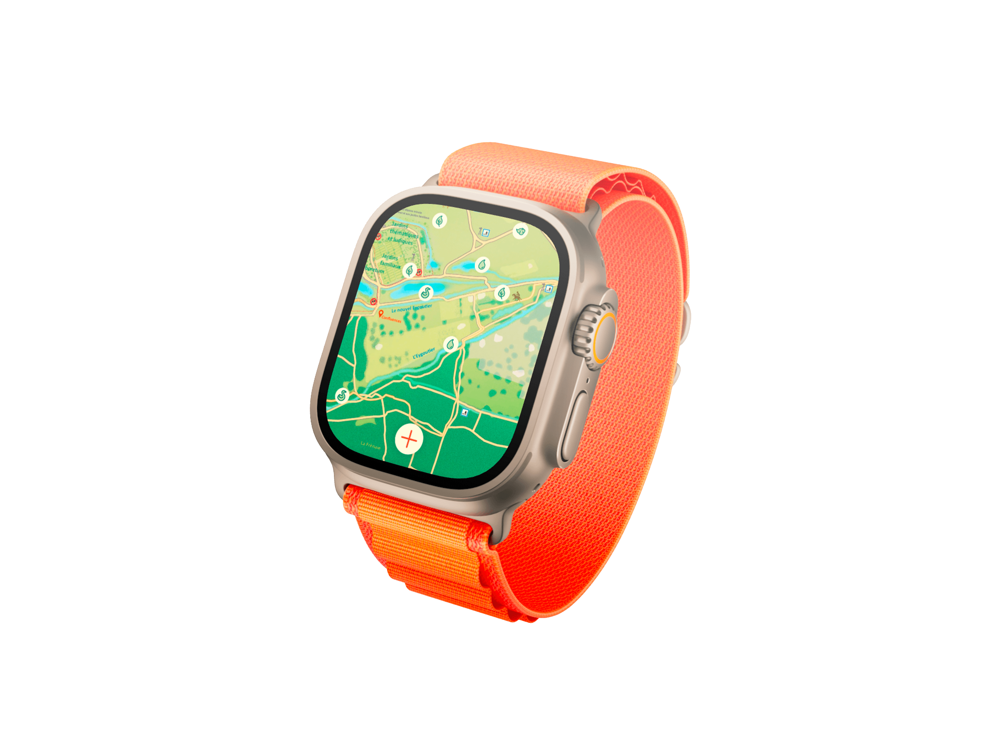
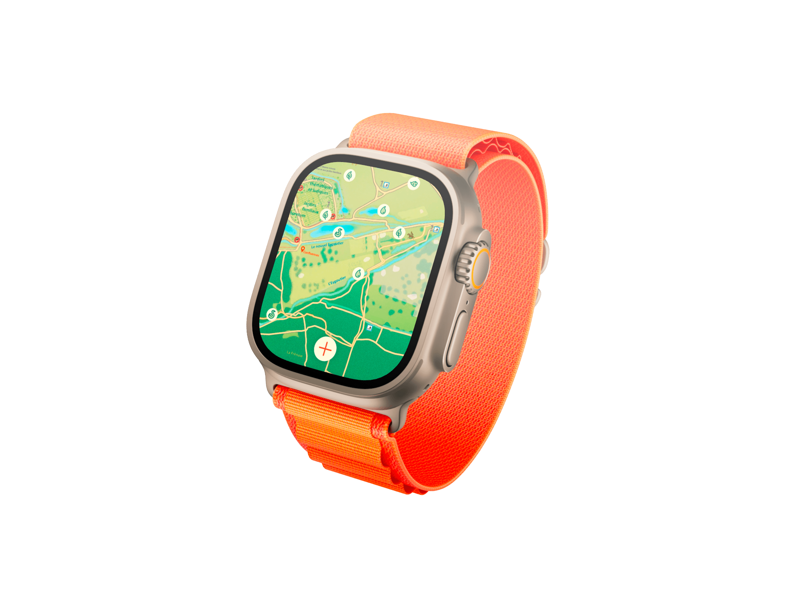

"Discover the life in motion of Plan de la Garde Park and follow the evolution of its wildlife and flora with the rhythm of nature."
After several observations at the Plan de la Garde Natural Park, Margaux and I noticed that the locations of interesting observation spots were not sufficiently highlighted for visitors. That’s why we took the initiative to create a mobile application to address this issue. The basic principle of the application relies on a map system where users can see points of interest: plants, water sources, wildlife and flora.
Users can visit the points of interest highlighted by the park, but they can also place their own locations. Subsequently, a public image bank is created for each point, allowing users to track the evolution of nature.
The different shades of green directly evoke nature, symbolizing freshness and vitality. They create a calming atmosphere that encourages exploration and connection with the environment. We have added a beige hue to bring warmth and welcome, balancing the dominant green. This creates a visually pleasing and inviting space for the user. Finally, orange has been integrated to introduce a dynamic touch. This vibrant color captures attention and adds a sporty energy, encouraging exploration and outdoor activities. Together, these colors establish a harmonious and engaging visual experience, perfectly suited to our theme.
A B C D E F G H I J K L M N O P Q R S T U V W X Y Z
a b c d e f g h i j k l m n o p q r s t u v w x y z
0 1 2 3 4 5 6 7 8 9
Erica One Regular 400
A B C D E F G H I J K L M N O P Q R S T U V W X Y Z
a b c d e f g h i j k l m n o p q r s t u v w x y z
0 1 2 3 4 5 6 7 8 9
Trial Black 900
A B C D E F G H I J K L M N O P Q R S T U V W X Y Z
a b c d e f g h i j k l m n o p q r s t u v w x y z
0 1 2 3 4 5 6 7 8 9
Trial Regular 400
The logo combines a location icon and a heron to symbolize the balance between technology and nature. The icon represents the tracking function, while the heron reflects the park's wildlife and peaceful atmosphere. This fusion highlights the idea of guiding users while staying connected to the natural environment.


We needed to create clear markers that inspire movement. That’s why we chose to draw inspiration from the silhouette of a drop of water.


While considering the appropriate medium to engage all audiences in the creation process, the choice to create a mobile application became evident. Therefore, we decided to develop an application using the Figma software.
For the creation of Mouvaplan, I chose Figma because it was the simplest and quickest way to bring my designs to life. The tool allowed me to easily prototype my ideas and gain a clear vision of the interface. Additionally, its flexibility and ease of use enabled me to focus on creativity rather than technical aspects.
 



I integrated a real-time weather system into the app to enhance the visitor experience. This feature doesn’t just inform; it guides activity choices and route suggestions, ensuring that each user can enjoy the park in ideal conditions. It's a way to make the app genuinely useful and personalized, going beyond being just a simple guide.
May this creation awaken your inspiration. (• ◡•)